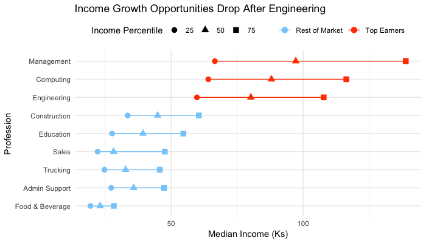

The Gorilla-in-the-Room: Income Stratification
If the 2020s are anything like the past decade, the world will be a vastly different place by 2030. There are powerful forces at play that make it an exciting time to be a software engineer but quite an unnerving time for chess grandmasters and truck drivers. Alphabet’s Waymo currently has autonomous vehicles (AVs) navigating US streets and Alphabet’s DeepMind developed an algorithm in 2017 that trained itself to play chess within four hours only to dominate Stockfish8 - the worlds computer chess champion of 2016. As an aspiring data scientist, these feats invigorate me to sharpen my skillset and immerse myself in the expansive literature of the field. The potential these technologies have to change society is unprecedented; to be a part of this global transformation is something I am not willing to miss out on.
The possibility of AVs ruling the roads is not only fascinating but promises to mitigate the rate at which car accidents occur. In his latest book, 21 Lessons for the 21st Century, Yuval Harari claims that “replacing all human drivers by computers is expected to reduce deaths and injuries on the road by about 90 percent [1].” Harari attributes this profound impact to the enhanced efficacy a connected and updatable network of AVs would have over individuals disparately driving by their intuition. Every AV would be synchronized with the other AVs around it, substantially reducing traffic density as well as accident rates. Every time an AV encounters a new scenario on the road, resulting in a crash or swerve, the underlying algorithm could immediately learn from that event and update all AVs across the network on how to proactively resolve similar future situations. Harari also denotes the potential benefits of a connected network of artificial intelligence (AI) agents in the realm of Healthcare. As of now, it is near impossible to ensure that doctors across the world are acting upon the most up-to-date information. This is something that would be far easier if a connected network of AI doctors could be streamed updates on the latest research and techniques. This scenario may be a bit far-fetched as of 2020, nonetheless, AI is still modestly making its mark. The American Cancer Society recently published a case study with Slalom that applied machine learning to identify abnormalities within 1,700 tissue slides, a task that would have taken a seasoned pathologist an unduly amount of time [2].
Harari is not the only one to acknowledge the potential benefits of AI. Andrew Yang, a former candidate of the 2020 presidential election, understands the potential economic value AI boasts as well. He leveraged a projection by Morgan Stanley that autonomous freight alone will save businesses $168 billion a year to fortify a campaign initiative around smoothing the transition for the 3 million truck drivers across the US who will be displaced by autonomous freight [3]. Harari and Yang imagine it being a far more challenging effort for displaced workers to transition to other professions in 2020 compared to the 1980s. In 21 Lessons for the 21st Century, Harari points out that in 2015, despite the Air Force facing a shortage of skilled candidates to man their drones, the Air Force was still unwilling to accept applications from supermarket cashiers displaced by self-checkouts. Yang is aware of this problem as well, calling out the unimpressive results retraining efforts for displaced manufacturing workers have had in the past [4]. These revelations led both men to conjecture that Universal Basic Income (UBI) could be a potential remedy, Harari diving into the details of what “Universal” and “Basic” could potentially mean, and Yang trying to enlighten America on why giving $1,000 a month to families across America is prudent.
After following Yang’s presidential campaign, it is evident that UBI could benefit the American people although I remain cynical as to the feasibility after reading about the lengths at which the uber-wealthy are willing to go to evade taxes in The Laundromat [5] and how disingenuous big banks are willing to be to enhance their profits in Rocket Boys [6]. Harari brings up an even more daunting point: even if wealthy Americans do choose to help the middle-class, it is irrational to believe that Americans will accept the burden of supporting countries that depend upon the US for a majority of their income once it is economically viable to automate their services [1]. Let's say Harari is wrong, and Americans decide to assist these countries, the definition of “Universal” and “Basic” will be critical in the coming decades and I can only hope policymakers emphasize the well-being of humanity over GDP.
If a New York Times bestselling author and a tech entrepreneur audaciously running for president are not enough to convince people that automation should be a primary concern of politicians, I am not sure if there is really anything of value I can add to the party. But I decided to take a shot anyway and see if I could better understand the extent to which income stratification exists in the US today. Before we dive into my study, I would like to mention that Bain & Company already wrote a rigorous 68-page report in 2017 on this topic [7]. Below are a few key excerpts from the report:
- Analytical, administrative or clerical service sector jobs with highly repetitive or rule-based tasks are surprisingly easy to automate. Law firms already are deploying algorithms to scan legal documents in lieu of highly educated and highly paid junior lawyers. Hedge funds have been developing machine learning systems that perform the work of thousands of analysts at inhumanly fast speeds.
- Our base-case scenario, in which automation displaces 20% to 25% of US workers by 2030, will hit the lowest end the hardest. Workers currently making between $30,000 and $60,000 per year are likely to experience the greatest disruption from automation: up to 30% could be displaced, and many will suffer depressed wage growth. We expect automation to have a lesser impact on those with incomes between $60,000 and $120,000 a year and the least negative impact on those earning more than $120,000.
- By 2030, employers will need 20% to 25% fewer workers, equivalent to 30 million to 40 million jobs in the US. To put these numbers in context, during the Great Recession, US employment fell rapidly from its peak in January 2008 to its trough in February 2010 by nearly 9 million jobs, or 6.3% of total employment.
- By 2030, we estimate that operating costs at an industry level could decline by as much as 10% to 15%. Under those conditions, increased profitability would largely flow to owners of capital and further reduce the share of national income allocated to labor.
- Rapid deployment of automation technologies is likely to exceed the pace at which economies can reabsorb and redeploy the millions of workers who may lose their jobs to automation.
- Across geographies, the decline in manufacturing costs due to the next level of industrial automation is likely to negatively impact large exporters that compete based on lower labor costs.
- Our analysis does not take into account additional third-order effects such as the introduction of new job categories. However, given the magnitude of disruption in our base-case scenario, we do not believe new job categories will temper the degree of labor force disruption in the 2020s.
- We acknowledge a material risk that social and governmental resistance delay extensive adoption of automation technologies. It is impossible to handicap that risk as the response across different countries is unlikely to be uniform. However, we believe that our base-case scenario of rapid deployment is more likely.
Analysis
It would be complacent of me to claim that this is an exhaustive study relative to the studies that Bain, Harari, & Yang have conducted, but as you have seen, I am quite passionate about this topic. I figured it is an ideal opportunity to grab some data from SimFin [8] and the US Bureau of Labor Statistics [9], and hone my skill set as a data scientist using R. My study consists of 3 parts:
- Are there companies that are growing larger and more efficient than the rest of the economy? If so, what sectors and industries do these companies belong to?
- Are there occupations that have broken away from the pack in terms of annual income? If so, what are these occupations and what proportion of the population work in these professions?
- Are there states that are falling behind in terms of the number of people who are poor relative to the number of wealthy people?
Companies
For the following plots, I obtained data from SimFin. The dataset defines which industries and sectors 1,006 American companies belong to and their corresponding income statement information for the years of 2011 - 2018. You can find the detailed assumptions I made when cleaning the data in the companies.R script in the connected GitHub directory.
First, I defined that for a company to be deemed a “Top Earner” they must have grown in total revenue by an average of 25% per year from 2012 - 2018. I found that 67 companies achieved this distinction. I then identified which sectors and industries these 67 companies belong to.

As expected, the Technology sector is near the top in terms of the number of companies deemed a “Top Earner”, but I did not expect Healthcare to hold the top spot. As I dove deeper, identifying which industries these companies belong too, some clarity was found: Application Software and Biotechnology hold the top 2 spots. It does not surprise me that the industries responsible for AI and Biomedical Engineering are growing faster than the rest of the industries after reading Homo Deus [10]. My next question became, how significant is the difference in the revenue distributions of the “Top Earners” versus the rest of the market?
Note, the area under the curves above are not representative of the total revenue being made by each group of companies. If it was, this plot would be even more staggering. The area under each curve equals 1 and it simply shows how 6% - 67 out of 1006 - of companies’ yearly revenue growths behave drastically different from the other 94% of the market. A Student’s t-test confirmed this visual inference producing a P-value indicating that there is an extremely low chance the difference in average yearly revenue growth between the “Top Earners” and the rest of the market is in fact 0.
To test the robustness of the results found above, I used a different metric to identify the “Top Earners” within the 1006 companies in the sample. I computed the top 10% of companies in terms of net income in 2012 and 2018 so I could observe the change in the number of companies from each sector in 2012 compared to 2018. If any sector made a substantial jump in either direction, there would be evidence to believe that that sector is becoming more or less efficient in securing profits.

As Yang has stated in many of his talks, Technology companies are spending less and less on labor costs while making more and more money. This trend directly fuels income stratification in America and while it is not necessary to fault these tech companies for outmaneuvering their competition, the continuation of this trend could hinder the rest of the market from obtaining a sufficient slice of the economic pie.
Occupations
In the Companies analysis, I found some evidence that confirmed the conclusions posed by Harari and Yang, but I still felt like there were pieces of information uncovered that would give me a better grasp of the current state of income stratification in America. Thus, I obtained the Occupational Employment Statistics (OES) dataset for 2018 at an aggregate US level as well as at an individual State level. Again, please find details on the assumptions I made when munging the data in the occupations.R script. Once data preparations were made, a natural place to start was to assess the distribution of median income of occupations within the US as a whole.
Finding a bimodal distribution was a clear indicator that there are two distinct data generating processes that are creating the occupational classes within the US. This insight gave me a starting point for the ensuing analysis by allowing me to deem “Top Earners” as professions with median incomes above $70,000. I could now ask questions like, what occupations constitute the “Top Earners”? How many people work in these professions and how much money does each of these professions make?
Under the hood, these plots illustrate that 20% of people made 40% of the money in 2018 when taking only salaries into account. This does not portray the true magnitude of income stratification in America like taking all income flows into account would, but it still illustrates the gap in the way the market values a select few professions over the rest. This is disconcerting evidence when taking into consideration the predictions of Harari, Yang, and Bain & Company, especially when you consider the size of the bubbles in the “Rest of the Market” group in the bubble plot above. It is sad, yet important to note that all professions in the “Rest of the Market” group will be hit the hardest by automation displacement over the next decade [7].
To build upon the above analysis, I implemented k-Means clustering to identify distinct groups of professions that are extremely similar to each other while maintaining that each group is as dissimilar as possible from one another. This approach is more rigorous than applying a naive cutoff of $70,000 on the median income of each profession to determine whether that profession is a “Top Earner” or not since it takes into account total employees, median income, and the median incomes at the 10th, 25th, and 75th percentile of each profession. The k-Means algorithm found 3 distinct clusters: cluster 3 being the select few wealthy folks, cluster 2 being the sizable middle-class, and cluster 1 being the majority of the population that is poor.
The top 50 professions in terms of median income in cluster 3 can be found in the top_professions.csv and the bottom 50 professions in terms of median income in cluster 1 can be found in the bottom_professions.csv. A few notable professions from each group can be found below. Note, there were several professions such as Bartenders, Models, Waitresses, Gaming Dealers in the bottom_professions.csv that I find hard to believe make that low of income and are likely making a substantial amount in tips that are off the books.
- Top Professions: Aerospace Engineers, Physicists, Economists, Sales Managers
- Bottom Professions: Cashiers, Fast Food Workers, Packagers, Home Health Aides
States
To make the most of the clustering results and OES dataset, I leveraged the clustering assignments given by k-Means to understand whether certain states are more susceptible to the displacement of jobs due to automation than others. The better we can understand what portions of America are at the most risk of extreme income stratification, the better the federal and state governments can prepare for the encroachment of job automation.
For this analysis, I used the same 2018 OES dataset that I used in the Occupations analysis but instead of filtering for occupational data at the aggregate US level, I filtered for occupational data at the State level. All of the occupations that were given a clustering assignment in the analysis above were merged to the State level dataset. Thus for each state, I had: occupation, cluster assignment, number of employees in that occupation, and income information for all occupations. From here, I created a new column that served as my multiplier variable, each profession in cluster 3 was assigned a value of 1 for wealthy, cluster 2 received a value of 0 for middle-class, and cluster 1 was assigned a value of -1 for poor. I then multiplied this variable by the number of employees in that occupation to create a counting variable. Finally, I grouped on state and summed the counting variable to compute the “Automation Risk” of each state. This computational process can be found in the states.R script if it was a bit convoluted. This metric captures the magnitude of poor people compared to the magnitude of wealthy people in a given state. This process of computing the income stratification of a state is a bit naive in comparison to the Gini Index [11], but serves a similar purpose. “Automation Risk” simply calculates the number of wealthy people and subtracts that number by the number of poor people and washes out the middle-class.
What I found was expected but staggering nonetheless: all states have hundreds of thousands more people that are poor than wealthy people, and in the extreme two states (California & Texas), north of 5 million more. Although, Texas and California having the highest magnitude of poor people is to be expected since these are the states with the largest population and their scales are simply not comparable to the other states. However, when you standardize a state’s “Automation Risk” by dividing it by the total number of people working in that state, you find very different, but more representative results.
These results are not necessarily in alignment with the Gini Index of each state in 2018 [12] since “Automation Risk” purely takes a headcount of wealthy people and subtracts that by the number of poor people, not taking into account accumulation of income percentiles or anything like that. But still, these findings are not promising as to the current prevalence of income stratification in the US and where it is likely to be by 2030.
The top 10 highest risk states can be found in the bottom_states.csv and the 10 states that are least at risk can be found in the top_states.csv in the connected GitHub directory. A few notable states at the top and bottom of the “Automation Risk” metric can be found below.
- Top States: Massachusetts, Maryland, Colorado, Minnesota, Utah
- Bottom States: Louisiana, Mississippi, Nevada, Kentucky, West Virginia
I would encourage the states in the bottom_states.csv, if they aren’t already, to begin researching the trajectory of job displacement as automation is deployed over the next 10 years and how to implement programs to reabsorb the people working in the bottom_professsions.csv back into meaningful and sustainable professions.
Moving Forward
The technological achievements humans are going to achieve over the next decade and onward is truly inspiring. As a grad student, I am not certain where I will have a hand in this innovation but I know I will one way or another. I believe it is important to keep the well-being of humanity in mind and not get lost in the capitalistic mindset, not just for myself, but for anyone who is looking to leave a mark on the world. This in part is why I have written this article and why I was so inspired to see much of America get behind Andrew Yang’s message. I will not pretend that my study above is even in the same league as what Yuval Harari, Andrew Yang, and the Macro Trends Group at Bain have delivered, but it sure was a journey for me to write this piece and if you’re still reading at this point I am confident you got something out of it too.
I am fascinated by the visualizations confirming that the Application Software and Biomedical Engineering industries are already speeding past the rest of the market. Observing the bimodal distribution of median income of occupations, and seeing what this distribution consisted of in terms of professions and associated revenue growth opportunities cemented my intuition that there really are two classes of professions in the US. Computing the “Automation Risk” for each state and geographically visualizing it put into perspective the inordinate number of people that are poor compared to the select few that are wealthy in the US. I had some intuition as to which states were most at risk of extensive job displacement due to automation but I would have never guessed Nevada to be the most at risk by a substantial margin.
I hope the research and descriptive study I’ve walked you through illustrated how imminent job displacement due to automation is and that I’ve inspired a level of urgency within you. I have a feeling the progressive idea of UBI will be pushed off by policymakers and corporate executives for quite some time but eventually, when things reach a breaking point, these decision-makers will come around and implement something along the lines of UBI to help the majority of the population that has fallen behind the wealthy. When this time comes I hope the people who play a part in defining what “Universal” and “Basic” mean as an actionable policy are not purely influenced by capitalistic motives and realize that their wealth is not as important as the well-being of the hundreds of millions of people that they serve. I hope these decision-makers have world-class advisory teams behind them to conduct the proper research, gather all of the pertinent facts, and to provide diverse and unique perspectives to ensure this pivotal point in the evolution of society is managed properly.
This study would definitely benefit from incorporating historical OES data into the Occupations and States analyses. This is a task I may get around to eventually, but it will have to wait because I am eager to move on to my next topic - Mental Health. My next article will be an attempt to understand what countries across the world are doing right to maximize the happiness of their citizens in hopes that I can fuel discussion and provide some early guidance for people who are pondering the same questions as Harari and Yang.
References
- Yuval Noah Harari, “21 Lessons for the 21st Century” [Print], 2018. Available: link [Accessed March 2020]
- “American Cancer Society: Finding breast cancer patterns with machine learning” [Online]. Available: link [Accessed March 2020]
- “Ease the Transition to Self-Driving Vehicles” [Online]. Available: link [Accessed March 2020]
- “The Freedom Dividend, Defined” [Online]. Available: link [Accessed March 2020]
- Jake Bernstein, “The Laundromat: Inside the Panama Papers Investigation of Illicit MoneyNetworks and the Global Elite” [Print], 2019. Available: link [Accessed March 2020]
- Michael Lewis, “Flash Boys: A Wall Street Revolt” [Print], 2015. Available: link [Accessed March 2020]
- Karen Harris, Austin Kimson, & Andrew Schwedel, “Labor 2030: The Collision of Demographics, Automation and Inequality” [Online], Feb 2018. Available: link [Accessed March 2020]
- "SumFin - Bulk Download" [Online]. Available: link [Accessed March 2020]
- "Occupational Employment Statistics Home Page" [Online], 2018. Available: link [Accessed March 2020]
- Yuval Noah Harari, “Homo Deus: A Brief History of Tomorrow” [Print], 2017. Available: link [Accessed March 2020]
- Jim Chappelow, “What is the Gini Index?” [Online], Feb 2020. Available: link [Accessed March 2020]
- Erin Duffin, “Gap between rich and poor, by state in the U.S. 2018” [Online], Oct 2019. Available: link [Accessed March 2020]